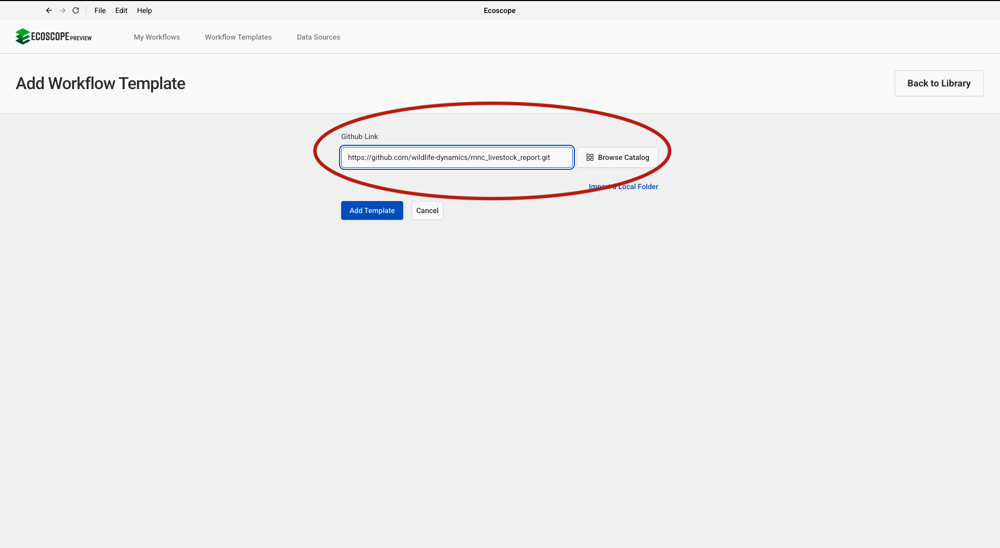
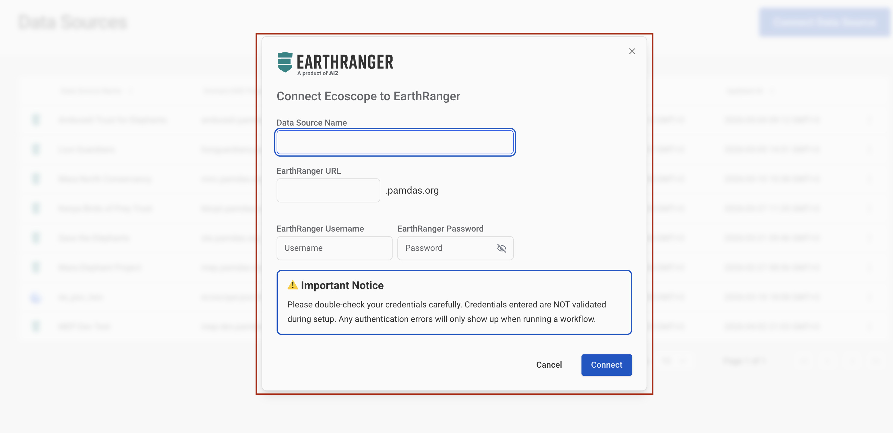
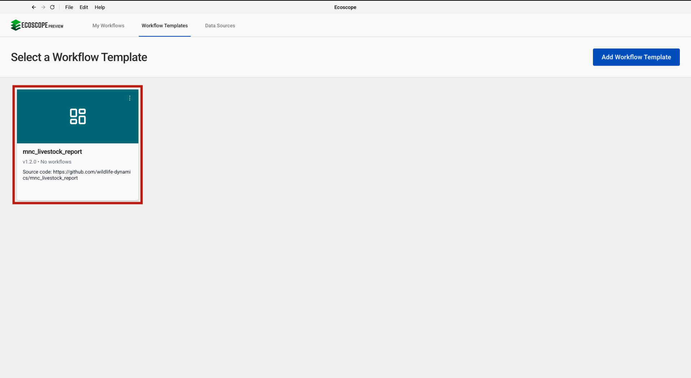
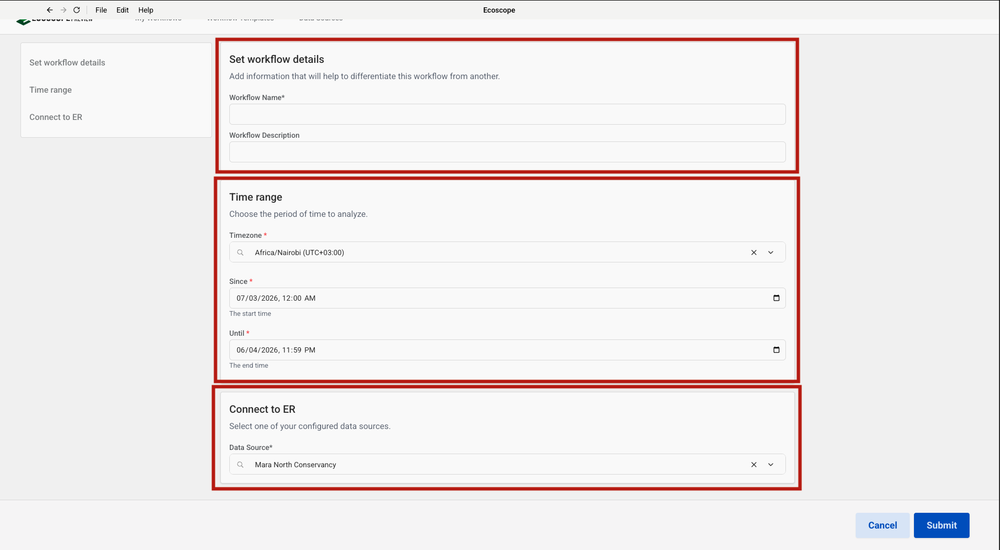

This guide walks you through configuring and running the MNC Livestock Report workflow, which processes mobile boma movement, cattle count, livestock predation, and illegal grazing events from EarthRanger to produce tabular CSV reports and interactive maps.
The workflow delivers, for each run:
CSV tables
Maps (HTML + PNG)
Before running the workflow, ensure you have:
mobile_boma_rep, cattle_count, livestock_predation_rep, and illegal_grazing_rep events recorded for the analysis periodIn the Ecoscope app, navigate to the Workflow Templates tab and click Add Workflow Template (top-right). In the Github Link field that appears, paste the repository URL:
https://github.com/wildlife-dynamics/mnc_livestock_report.gitThen click Add Template to register the template.

Navigate to Data Sources and click Connect. The Connect Ecoscope to EarthRanger dialog will open. Fill in the form:
| Field | Description |
|---|---|
| Data Source Name | A label to identify this connection (e.g. Mara North Conservancy) |
| EarthRanger URL | Your instance URL (e.g. your-site.pamdas.org) |
| EarthRanger Username | Your EarthRanger username |
| EarthRanger Password | Your EarthRanger password |
Important: Credentials entered here are not validated during setup. Any authentication errors will only appear when the workflow runs.
Click Connect to save the data source.

Go back to Workflow Templates. The newly added template appears as the mnc_livestock_report card (showing the source repository URL). Click the card to open the workflow configuration form.

The configuration form is divided into three sections, each highlighted in the left-hand navigation panel.
Set workflow details
| Field | Description |
|---|---|
| Workflow Name | A short name to identify this run (required) |
| Workflow Description | Optional notes to differentiate this run from others (e.g. reporting month or site) |
Time range
| Field | Description |
|---|---|
| Timezone | Select the local timezone (e.g. Africa/Nairobi (UTC+03:00)) |
| Since | Start date and time — all livestock events from this point are fetched |
| Until | End date and time of the analysis window |
Connect to ER
Select the EarthRanger data source configured in Step 2 from the Data Source dropdown (e.g. Mara North Conservancy).
Once all three sections are filled, click Submit to start the workflow.

Once submitted, the runner will:
mobile_boma_rep, cattle_count, livestock_predation_rep, and illegal_grazing_rep events for the analysis period from EarthRanger; extract the date from each event's timestamp; add a temporal index.mobile_boma_rep events; process and flatten event details; retain key fields (date, event type, location, boma zone, boma status, relocation date and reason); count unique boma events per day with a grand total row; save as mobile_boma_movement_summary_table.csv; produce a point map coloured by event type saved as boma_movement_map.html and .png.cattle_count events; process and flatten event details; retain cattle counts per zone (Zone 1, Zone 2/3, Zone 4, and total); save as total_cattle_count_summary_table.csv.livestock_predation_rep events; process and flatten event details; produce a point map coloured by livestock species saved as livestock_predation_events.html and .png; count unique predation events per day with a grand total row and save as total_livestock_predation_summary_table.csv; produce a detailed summary with species, suspected predator (nulls and "Other" values replaced with Unknown), and animals affected saved as livestock_predation_summary_table.csv.illegal_grazing_rep events; process and flatten event details; retain herd zone, landowner, and action taken; produce a point map coloured by event type saved as illegal_grazing_map.html and .png.ECOSCOPE_WORKFLOWS_RESULTS.All outputs are written to $ECOSCOPE_WORKFLOWS_RESULTS/.
| File | Description |
|---|---|
mobile_boma_movement_summary_table.csv |
Daily unique boma event count (date, boma_events) with a grand Total row |
total_cattle_count_summary_table.csv |
Cattle counts per date by zone (zone_1, zone_2_3, zone_4, total_count) |
total_livestock_predation_summary_table.csv |
Daily unique predation event count (date, livestock_predation_events) with a grand Total row |
livestock_predation_summary_table.csv |
Detailed predation records: date, livestock_species, suspected_predator, total_livestock_affected |
| File | Description |
|---|---|
boma_movement_map.html / .png |
Mobile boma locations on MNC grazing zones and parcels, coloured by event type |
livestock_predation_events.html / .png |
Predation incident locations on conservancy boundaries and parcels, coloured by livestock species |
illegal_grazing_map.html / .png |
Illegal grazing locations on MNC grazing zones, coloured by event type |